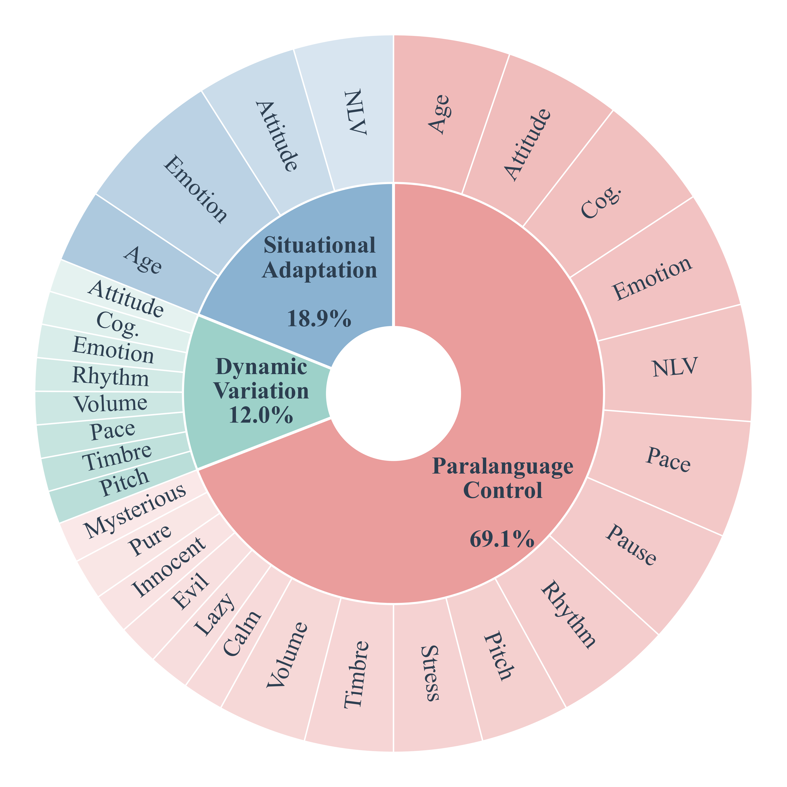

A SpeechParaling-Bench
A comprehensive Chinese–English parallel benchmark for paralinguistic-aware speech generation. Based on the ICML 2026 paper and the project README, this homepage presents dataset details, 13 paralinguistic dimensions, and model-level comparisons.
概览
SpeechParaling-Bench 提供涵盖 100+ 个副语言特征的 1,001 条中英并行语音查询，面向实际应用场景下的 paralinguistic 指标评估与模型比较。评测采用 LALM 作为 Judge，覆盖 Paralanguage Control、Dynamic Variation 与 Situational Adaptation 三个任务等级。
数据集组成 (Figure 1)
数据集包含 1,001 条中英文并行语音查询，覆盖超过 100 种副语言特征，共 13 个维度，特征总数 104。平均文本长度为英文 27.4 字，中文 35.3 字；平均音频时长英文 10.3s，中文 8.5s。数据统计见下表。
| 数据统计项 | 数值 |
|---|---|
| 样本数 | 1,001 |
| 维度数 | 13 |
| 特征总数 | 104 |
| 英文文本均长 | 27.4 字 |
| 中文文本均长 | 35.3 字 |
| 英文音频时长 | 10.3 s |
| 中文音频时长 | 8.5 s |
Cog.: Cognitive State
数据维度（13 维）及类别划分
论文 Figure 5 将 13 个副语言维度划分为三大类：表达性（Expressive）、韵律性（Prosodic）和声学性（Acoustic）。下列列出 13 个维度及其简要类别映射（以论文定义为准）：
- 表达性：Emotion、Attitude、Style
- 韵律性：Pitch、Pace、Pause、Rhythm、Volume、Stress
- 声学性：Age、Timbre、Cognitive State、Non-Linguistic Vocalizations
维度名称：Age, Pitch, Timbre, Pace, Volume, Pause, Rhythm, Stress, Emotion, Cognitive State, Non-Linguistic Vocalizations, Attitude, Style
Figure 1：数据集组成

Figure 2：Paralanguage Control 在中文上的维度对比

Leaderboard（基于论文 Table 3）
以下为论文 Table 3 的对比结果摘要。论文展示 English 与 Chinese 两个子集在 Paralanguage Control、Dynamic Variation、Situational Adaptation 三个任务上的模型表现。请注意，IndexTTS 并非基线，实际基线需要从论文表格中核对。
| 语言/任务 | 模型 | Paralanguage Control - 总分 | Dynamic Variation - 总分 | Situational Adaptation - 总分 | Overall |
|---|---|---|---|---|---|
| Chinese (ZH) | Doubao Realtime Voice | 70.85 | — | — | 70.85 |
| Chinese (ZH) | GPT Audio | 39.10 | — | — | 39.10 |
| Chinese (ZH) | Gemini Audio | 28.19 | — | — | 28.19 |
| English (EN) | Gemini Audio | 64.98 | — | — | 64.98 |
| English (EN) | GPT Audio | 49.40 | — | — | 49.40 |
说明：Table 3 数据来自原文 Table 3；IndexTTS 不作为基线。
模型对比要点
- Doubao 在中文数据集上对 Paralangual Control 的综合表现领先；Gemini 在英文数据集上处于领先地位。
- 多数模型在表达性维度与声学维度上存在不同程度的权衡，需要在静态控制与时间动态之间寻求平衡。
- IndexTTS 不是基线，应以论文 Table 3 的基线设置为参考。
引用
论文：SpeechParaling-Bench: A Comprehensive Benchmark for Paralinguistic-Aware Speech Generation（ICML 2026）